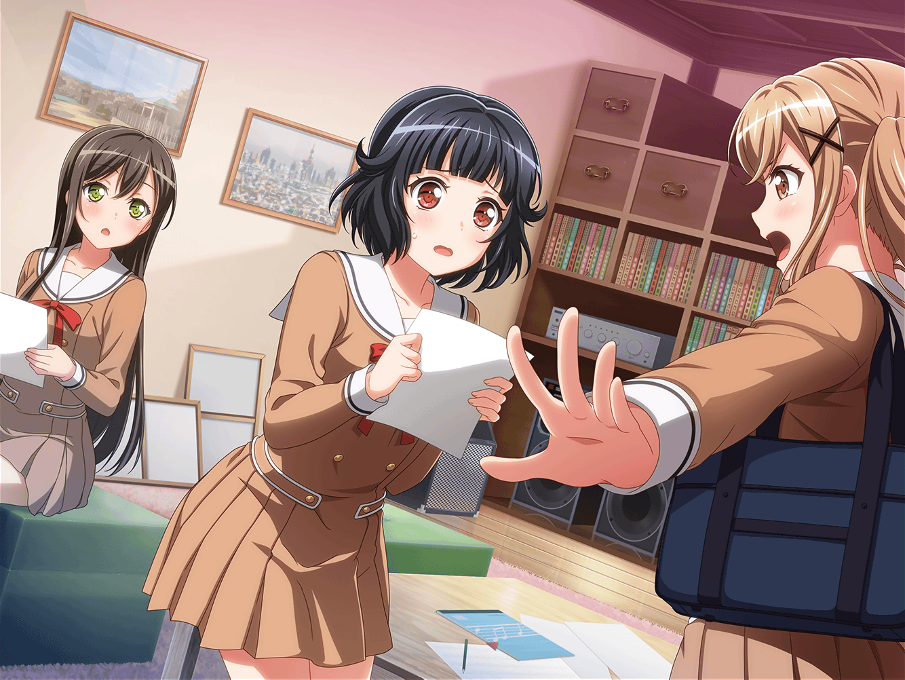

住宅街
りみ
ご、ごめんね、有咲ちゃん。
なんか送ってもらっちゃって……
遠回りになっちゃうのに
有咲
いや、香澄と沙綾が送っていけってうるさいから。
……それにりみも病み上がりだろ？
やっぱり、心配だし……
りみ
本当にありがとう。
あ、もうこの辺で大丈夫だよ
有咲
いいよ、ここまで来たんだから家まで送ってくよ。
それに、りみともちゃんと話、したかったし
りみ
話って……この前のこと？
ていうか、あれは私が悪かったんだから、
有咲ちゃんは気にしないで
有咲
いや、悪いのは私だって。
いくら余裕がなかったとはいえ、あんな言い方しちゃって、
ホントに悪かったと思ってる
りみ
ううん、私も作曲がうまくいってなかったから、
余裕がなくなっちゃてて……
だからあれはお互い様だよ……
りみ・有咲
ホントにごめんなさい
りみ・有咲
……っ！？
りみ
ふふ。
またちょっとハモっちゃったね
有咲
あはは……
結構、いい感じだったよな？ 今のハモり
りみ
あ、これならきっとうまくいきそうだな。
……ねえ、有咲ちゃん？
有咲
ん？
りみ
さっき渡した新曲のスコア見てくれる？
有咲
え？ これ？
りみ
そうそう。
そのスコアのここの部分、よーく見てみて
有咲
ここの部分……？
有咲
ん？ これって！
りみ
気づいてくれた？
ここはね、私と有咲ちゃんのユニゾンのパートにしてみたんだ。
有咲ちゃんにも一緒に弾いてほしくて
有咲
うわ、すっげーいいよ、ここ！
りみ
でしょ！？
りみ
よかった～、有咲ちゃんがそう言ってくれて。
悩んだ甲斐があったよ～
有咲
なんか……こんなこと改めて言うのって、
すっげー照れくさいけどさ……
有咲
私、りみの作る曲、すごい好きだよ
りみ
あ、ありがとう、有咲ちゃん……
……え？ どうしよう？
急にそんなこと言われたら……
りみ
ちょっと、あ……ごめん……
なんか涙が……出てきちゃった……
有咲
ご、ごめん！
けど、どうしてもちゃんとそれだけは言っておきたくって
りみ
うん……うん……嬉しい……
ホンットーーに嬉しい……
……ううっ……ヤダ、泣いちゃったよ
有咲
な、泣くなって……っ
りみ
だって、有咲ちゃんがそんなこと言うから……
有咲
てか、私は素人だから全然的はずれなこと
言っちゃうかもだけど……
なんていうか、りみの作る曲って優しいんだよな
有咲
もちろん曲自体もそうなんだけど、それより
他のメンバーが目立つパートとかちゃんと作ってて
周りに対する気遣いっていうの？
有咲
そういうのがちゃんと曲にでてる感じ？
い、言ってることが全然違ったらごめんな
りみ
ううん、違わないよ。
私もそれを１番気にしてるの。
よかった、ちゃんと伝わってたんだ……
有咲
たぶん、ちゃんとみんなに伝わってると思うよ。
だって、ド素人の私に伝わってるくらいだから
りみ
ありがとう、有咲ちゃん。
けど、有咲ちゃんは素人なんかじゃないよ。
ポピパの大事なキーボード担当だよ
りみ
ポピパの曲には欠かせない、重要な仲間だもん
有咲
……う、うん
りみ
……はぁ～、けど、また泣いちゃったな～。
授業のノートの時も泣いちゃったし、
もう、有咲ちゃんには泣かされてばっかりだよ
有咲
つーか、その言い方、誤解を生むんだけど……
りみ
ふふふ。
……ねえ、有咲ちゃん。
２人のユニゾンのパート、絶対うまくやろうね！
有咲
うん、絶対
りみ
今の私達だったら絶対にうまくいくよね
有咲
間違いないって。
こんなにハモる２人、なかなかいねーぞ
りみ
うん！ そうだよね！
有咲
それじゃあ、暗くなる前にそろそろ行くかー。
家までちゃんと送らせてもらうんで
りみ
……はい。
それじゃあ、お言葉に甘えちゃうね